احتمالا سایت مدیا آرشیو رو بشناسید. این سایت یک آرشیو نسبتا کاملی از تبلیغات صدا و سیما از سال ۱۳۹۰ تا ۱۴۰۱ داره. برای من جالب بود که یکسری تحلیل ها رو روی دیتای این سایت انجام بدم. مجموعه دادهای که از این سایت جمعآوری کردم ۵۴,۱۷۱ رکورد داره که ستون های اون عبارتند از :
در این سایت ۳۳ دستهبندی مختلف وجود داره که عبارتند از :
همونطور که میبینید بعضی از دسته بندی ها همپوشانی دارند. من دستهبندی های زیر رو یکی در نظر میگیرم و عنوانی که Bold کردم رو نماینده اون دستهبندی در نظر میگیرم :
در نهایت با انجام این کار تعداد دستهبندی ها از ۳۳ دسته به ۱۵ دسته زیر کاهش پیدا میکنه :
منظور از آرم آگهی ها همون تبلیغاتی کوتاهی است که در ابتدا و انتهای آگهی ها پخش میشه :
دستهبندی بعدی که نیاز به توضیح داره سایر موارد تبلیغاتی است. خب ما الان چه جوری بفهمیم چه چیز هایی در این دستهبندی قرار میگیره؟ آفرین! ابر کلمات! یکی از کاربرد های ابر کلمات اینجاست. هر آگهی یک عنوانی داره. برای مثال یه آگهی داریم با عنوان تیزر تبلیغاتی تلویزیونی تن تاک ، کفش پیادهروی تن تاک. من اومدم ابر کلمات این عناوین رو رسم کردم و نتیجه به صورت زیر شد :
از ابر کلمات بالا میشه حدودا متوجه شد چه محصولاتی در این دستهبندی قرار میگیرن. مثلا کفش، قالیشویی، سازمان های دولتی، حشرهکش، مسابقات تلفنی، موسسه های خیریه و … در دستهبندی سایر موارد تبلیغاتی قرار میگیرند. حالا این ابر کلمات ۱۵۰ کلمه اوله. اگر بخواید دقیق تر کار کنید، میتونید مثلا ابر کلمات ۱۵۰ کلمه دوم رو هم رسم کنید و بازم بررسی کنید.دستهبندی بعدی که نیاز به توضیح داره، جدیدترین ها است. زمانی که از منوی سمت راست سایت آگهی های بعضی از ماه ها (مثلا اردیبهشت ۱۳۹۳) رو باز کنید، یه دستهبندی به نام جدیدترین ها وجود داره. من اول فکر میکردم که اگر جدیدترین ها رو در سایت باز کنیم به همه آگهی های اون ماه دسترسی داریم. اما بعد از بررسی هایی که انجام دادم دیدم که بعضی از آگهی ها رو نداره! بنابراین خیلی دستهبندی مهم نیست. فقط به این دلیل که در سایت وجود داشته، من هم توی نمودار ها آوردمش. نمودار زیر نشون میده چه تعداد تبلیغات در هر دستهبندی (از ۱۳۹۰ تا ۱۴۰۱) به نمایش گذاشته شده :
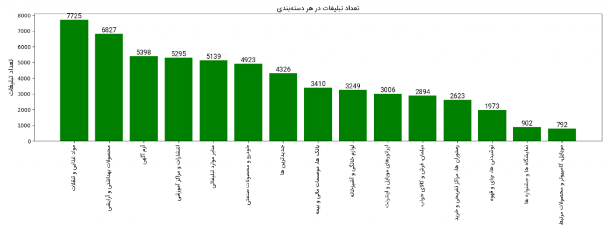
بر اساس نمودار بالا، بیشترین تبلیغات پخش شده مربوط به دسته مواد غذایی و تنقلات میشه. من اول حدس میزدم که دسته آرم آگهی ها بیشترین تعداد تبلیغ رو داشته باشه. چون هزینه پایینتری نسبت به سایر تبلیغ ها داره و همیشه اول و آخر آگهی ها پخش میشه ولی خب اشتباه میکردم! نمودار زیر یک نمای کلی از تعداد تبلیغاتی که از مرداد ۱۳۹۰ تا شهریور ۱۴۰۱ در تلویزیون پخش شده به ما نشون میده :
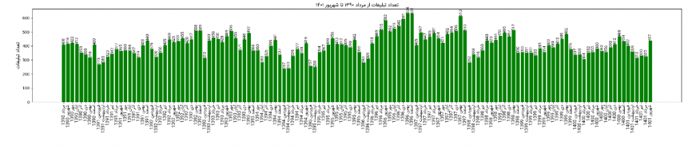
نمودار زیر نشون میده در سال های مختلف چه تعداد تبلیغات در تلویزیون پخش شده؟
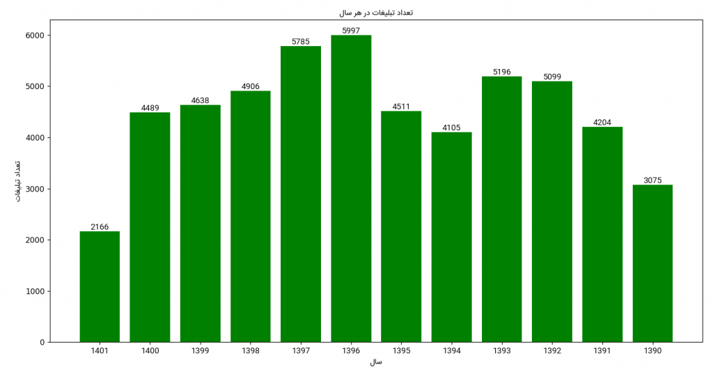
بر اساس نمودار بالا، بیشترین تبلیغات تلویزیون در سال ۱۳۹۶ و ۱۳۹۷ پخش شده! حالا دلیل اینکه سال های قبل و بعدش تعداد تبلیغات پخش شده در تلویزیون کمتر بوده چیه؟ اگر اتفاقات سال ها ۱۳۹۶ و ۱۳۹۷ رو بررسی کنیم :
به نظر میرسه به دلیل جام جهانی ۲۰۱۸ روسیه باشه. در سال ۱۳۹۶ تیم ملی فوتبال ایران به جام جهانی صعود میکنه و خود جام جهانی هم از ۲۴ خرداد تا ۲۴ تیر ۱۳۹۷ برگزار میشه. البته سال ۱۳۹۶ انتخابات ریاست جمهوری رو هم داشتیم که بی تاثیر نیست! نمودار های زیر نشون میدن در سال های ۱۳۹۶ و ۱۳۹۷ در هر دستهبندی چه تعداد تبلیغات پخش شده :
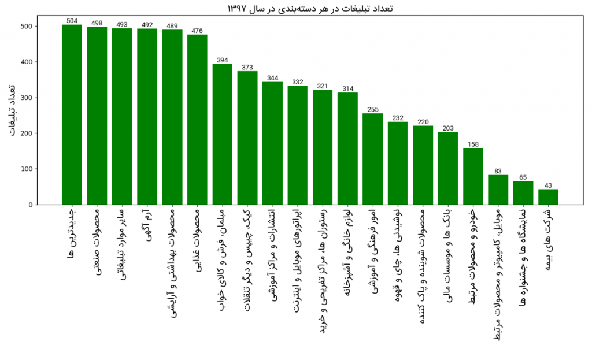
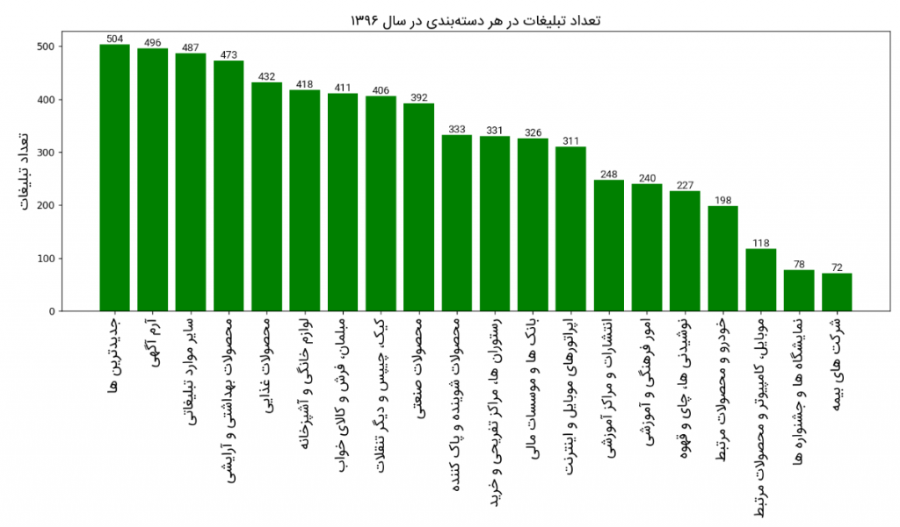
نمودار زیر نشون میده در ماه های مختلف چه تعداد تبلیغات در تلویزیون پخش شده؟
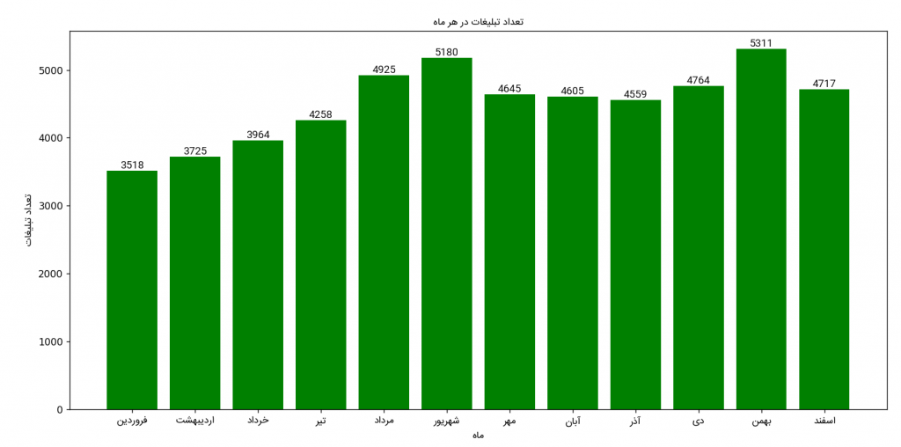
بر اساس نمودار بالا، بیشترین تعداد تبلیغات تلویزیون در ماه های بهمن و شهریور پخش شده! نمودار های زیر نشون میدن در ماه های بهمن و شهریور در هر دستهبندی چه تعداد تبلیغات پخش شده :
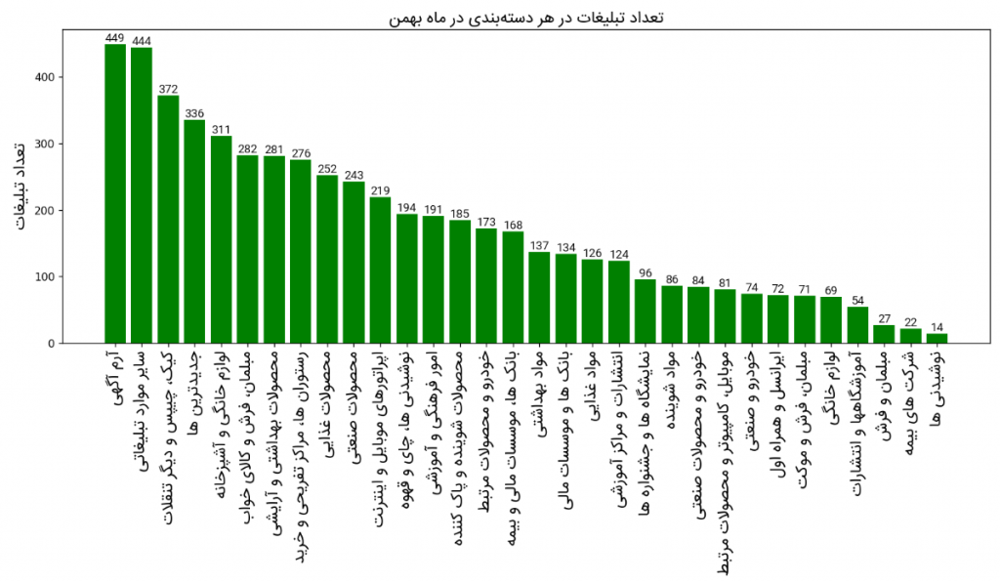
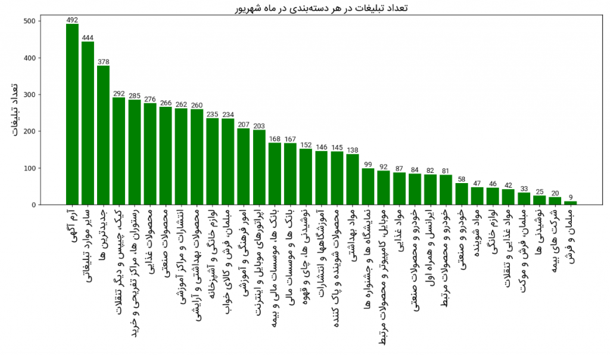
نمودار زیر نشون میده در ماه و سال های مختلف چه تعداد تبلیغات در صدا و سیما پخش شده :
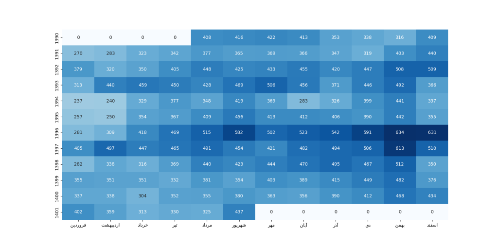
دلیل اینکه چهار ماه ابتدایی سال ۱۳۹۰ تعداد صفر تبلیغ رو نشون میده اینه که دیتایی از اون ماه ها در سایت وجود نداشته. همچنین، همانطور که پیشتر نیز گفته شد، داده ها تا پایان شهریور ۱۴۰۱ جمعآوری شده است. از این رو، در نمودار بالا عدد صفر رو برای تعداد تبلیغات پخش شده در ماه های مهر تا اسفند ۱۴۰۱ نمایش میده.حالا میخوام مدت زمان تبلیغات رو مورد بررسی قرار بدم. مجموع مدت زمان تبلیغات پخش شده از سال ۱۳۹۰ تا شهریور ۱۴۰۱ حدودا ۳۰۱۱۲ دقیقه است که یعنی هر تبلیغ به طور میانگین ۳۳ ثانیه بوده! کوتاه ترین تبلیغ ۳ ثانیه بوده که مربوط میشه به تیزر تبلیغاتی تلویزیونی بانک پارسیان با عنوان دو دهه خدمت رسانی که از نوع آرم آگهی بوده و از طریق لینک زیر میتونید مشاهده کنید :
طولانی ترین آگهی هم ۸۴۸ ثانیه بوده که مربوط میشه تیزر تبلیغاتی تلویزیونی همراه اول با عنوان برندگان قرعه کشی همراه اول که از طریق لینک زیر میتونید مشاهده کنید :
نمودار زیر توزیع مدت زمان تبلیغ های پخش شده رو نشون میده :
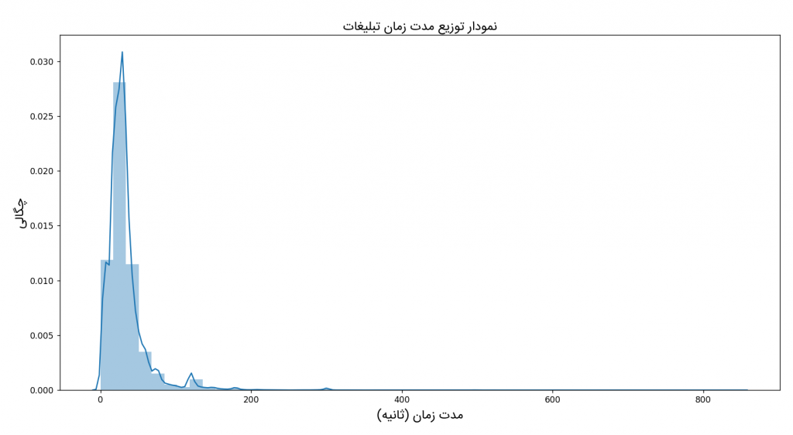
از این نمودار میشه متوجه شد مدت زمان بیشتر تبلیغات پخش شده در تلویزیون بین ۳ تا ۷۵ ثانیه بوده.نمودار زیر نشون میده در سال های مختلف چند دقیقه تبلیغات در تلویزیون پخش شده :
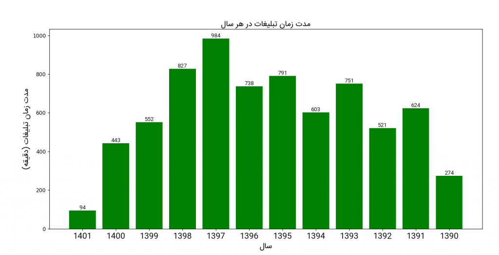
نمودار زیر نشون میده در ماه های مختلف چند دقیقه تبلیغات در تلویزیون پخش شده :
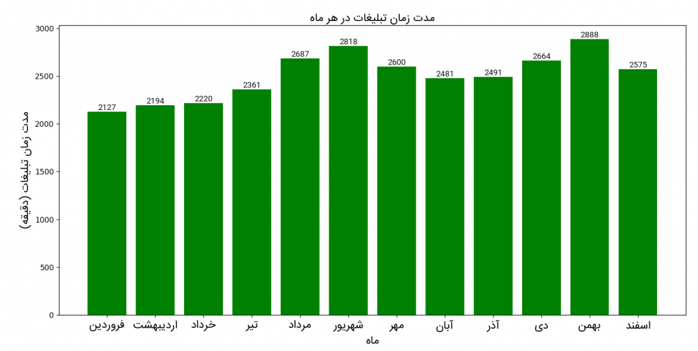
حالا میخوام برم سراغ ستون صاحب آگهی که همون شرکتیه که آگهیش توی تلویزیون پخش شده. در مجموع ۲۶۱۲ شرکت آگهی های خودشون رو در تلویزیون پخش کردند. نمودار زیر نشون میده شرکت های مختلف چند دقیقه تبلیغات در تلویزیون پخش کردند :
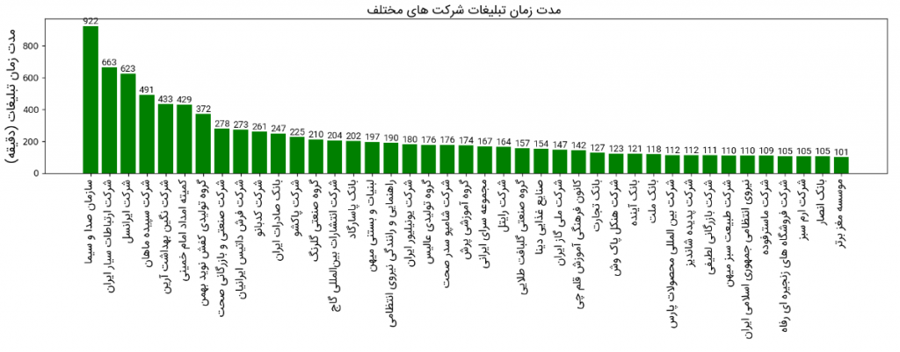
نمودار زیر هم نشون میده شرکت های مختلف چند تا تبلیغ در تلویزیون پخش کردند :
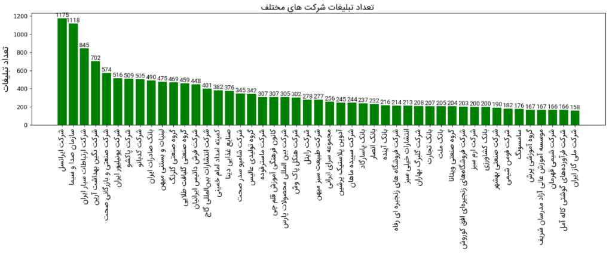
همنطور که در نمودار های بالا نیز مشاهده میکنید، شرکت ایرانسل بیشترین تعداد تبلیغ (۱۱۷۵ تبلیغ) رو نمایش داده ولی مدت زمان تبلیغاتش ۶۲۳ دقیقه بوده. یعنی به طور میانگین هر تبلیغش ۳۱ ثانیه بوده!نمودار زیر نشون میده به طور میانگین، مدت زمان تبلیغات شرکت های مختلف چقدره بوده :
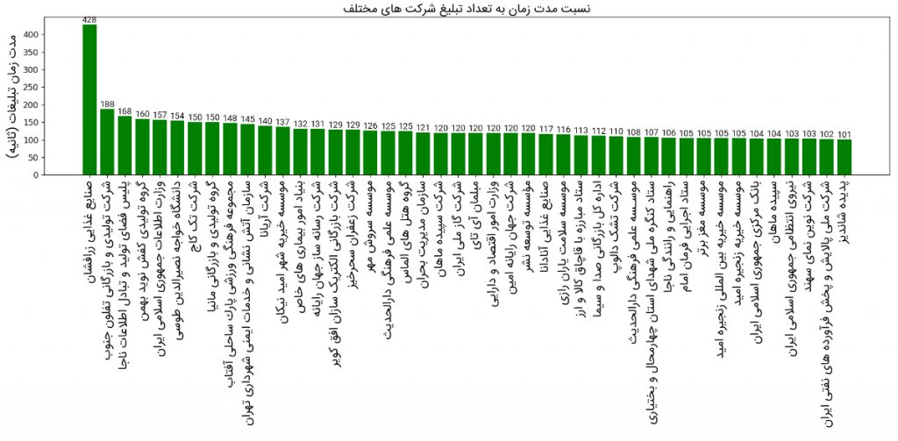
نمودار زیر نشون میده کدوم شرکت ها بیشتر از بقیه از آرم آگهی ها استفاده کردند :
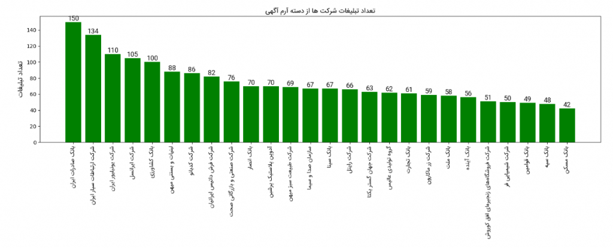
نکته جالبش اینه که بانک ها از همه بیشتر از آرم آگهی ها استفاده کردند! یعنی ارزون ترین تبلیغات ممکن رو انتخاب کردند!نمودار زیر نشون میده کدوم شرکت در سال ها و ماه های مختلف بیشترین تعداد تبلیغ رو داشته :رتبه اول :
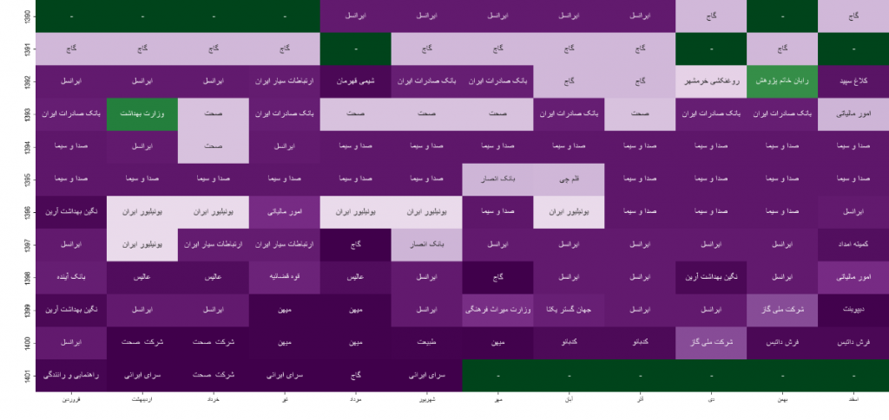
از نمودار بالا میشه فهمید که مثلا شرکت ایرانسل، در سال ۱۳۹۰ و بین ماه های مرداد تا آذر، رتبه اول بیشترین تعداد تبلیغات رو داشته. به عبارت دیگه، انقدر تبلیغات ایرانسل رو توی این بازه زمانی دیدیم دهنمون سرویس شده! یه جاهایی در جدول بالا میبینید که خط تیره گذاشتم. یعنی هیچ شرکتی رتبه اول نبوده؟ مگه میشه؟ الان توی جدول (هیتمپ) قبلی در اسفند ۱۳۹۱ ما ۴۴۰ تا تبلیغات داشتیم! پس چرا اینجا خط تیره نشون میده؟! دلیلش اینه که بعضی از رکورد های این دیتاست، ستون صاحب آگهی ندارند! مثلا لینک زیر رو ببینید :
اینجا هیچ اطلاعاتی از صاحب آگهی نداریم! آگهی پخش شده ولی مشخصات صاحب آگهی رو در سایت قرار ندادند. تعداد ۱۶۰۵۸ رکورد در این دیتاست وجود داره که هیچ اطلاعاتی از صاحب آگهی نداریم. البته میشه دونه دونه آگهی ها رو باز کرد و مشخصات شرکت رو وارد کرد ولی کار بسیار زمانبریه!رتبه دوم :
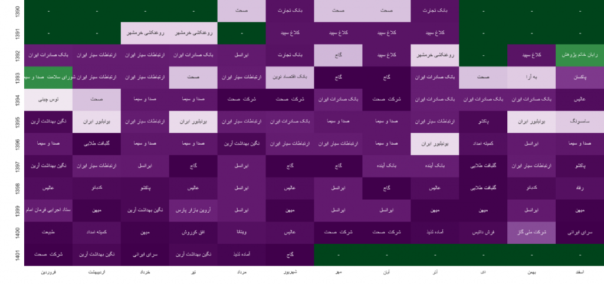
رتبه سوم :
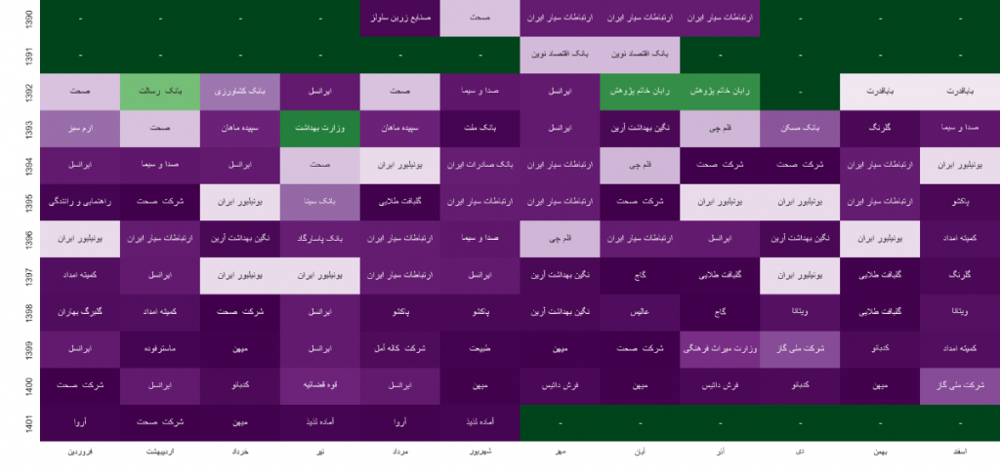
حالا همین کار رو میخوام برای دستهبندی ها انجام بدم. یعنی میخوام ببینم در ماه ها و سال های مختلف کدوم دستهبندی بیشترین تعداد تبلیغ رو داشته :
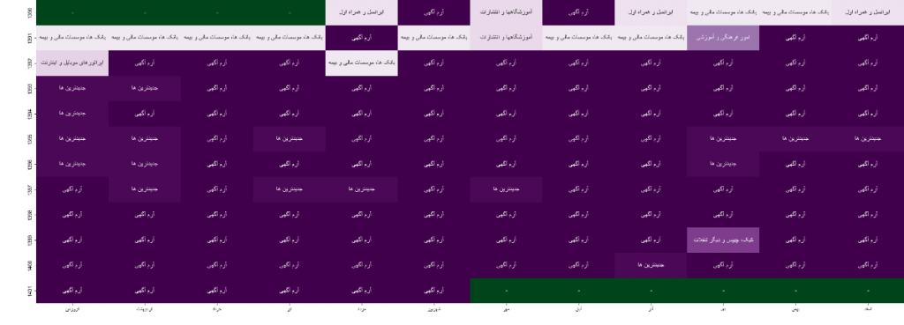
همونطور که میبینید در بیشتر ماه های سال آرم آگهی ها بیشترین تبلیغ رو داشتند. من دو تا دستهبندی آرم آگهی و جدیدترین ها رو حذف میکنم تا ببینیم نتیجه چه جوری میشه :
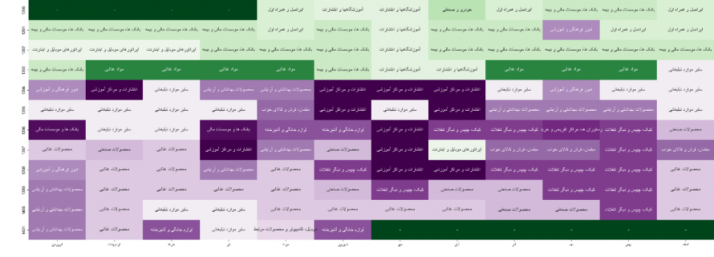
خب، میبینید که تنوع یه ذره بیشتر شد و مثلا جالبه که سال های ۱۳۹۰ تا ۱۳۹۲ تبلیغات بانک ها و موسسات مالی خیلی زیاد بوده! یا مثلا در ماه های شهریور تا آبان تبلیغات انتشارات و مراکز آموزشی خیلی زیاد شده!تصویر زیر ابر کلمات عناوین آگهی های پخش شده را نشان میدهد :
در ادامه میخوام تعداد تبلیغاتی که در هر دستهبندی پخش شده رو مورد بررسی قرار بدم. چون برای خودم جالبه که تک به تک سال ها و ماه های مختلف رو بررسی کنم، بنابراین نمودار همه سال ها و ماه ها رو به صورت جدا جدا براتون قرار میدم. چون تعداد نمودار ها زیاده گفتم آخر گزارش قرارشون بدم. نمودار های زیر نشون میدن در سال های مختلف کدامیک از دستهبندی ها بیشترین تعداد تبلیغ رو داشتند :سال ۱۳۹۰ :
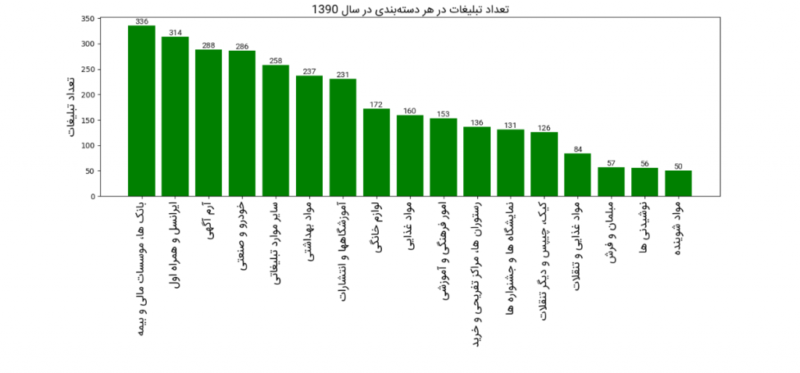
سال ۱۳۹۱ :
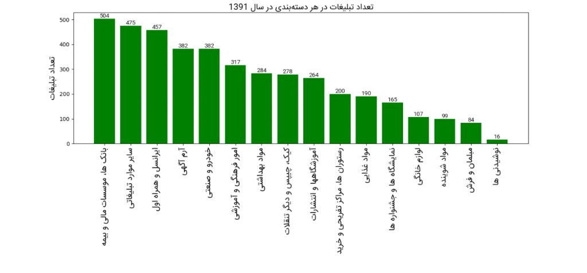
سال ۱۳۹۲ :
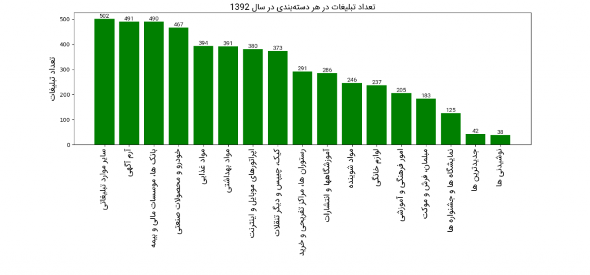
سال ۱۳۹۳ :
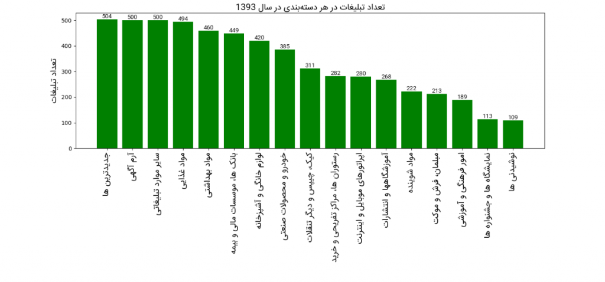
سال ۱۳۹۴ :
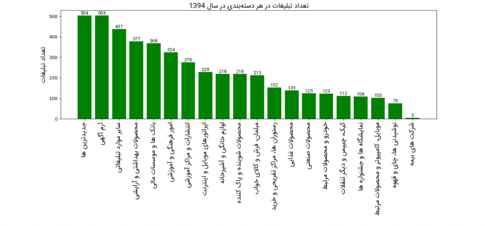
سال ۱۳۹۵ :
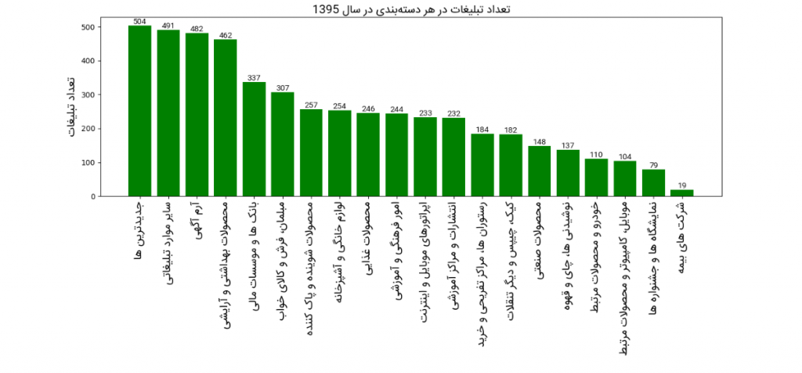
سال ۱۳۹۶ :
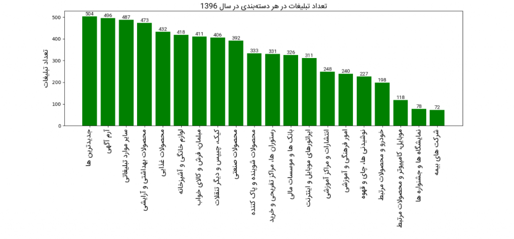
سال ۱۳۹۷ :
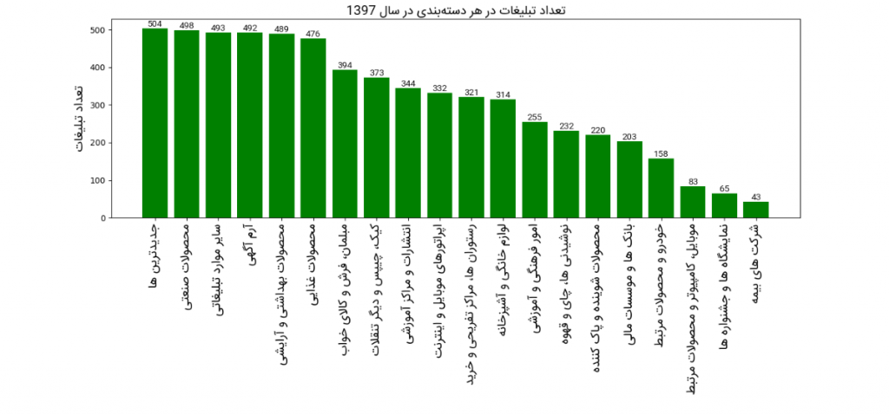
سال ۱۳۹۸ :
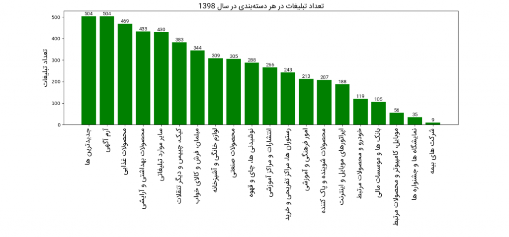
سال ۱۳۹۹ :
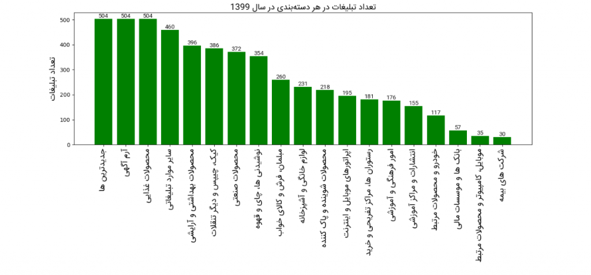
سال ۱۴۰۰ :
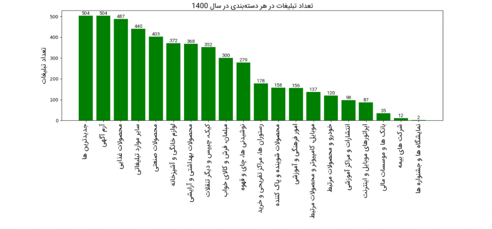
سال ۱۴۰۱ :
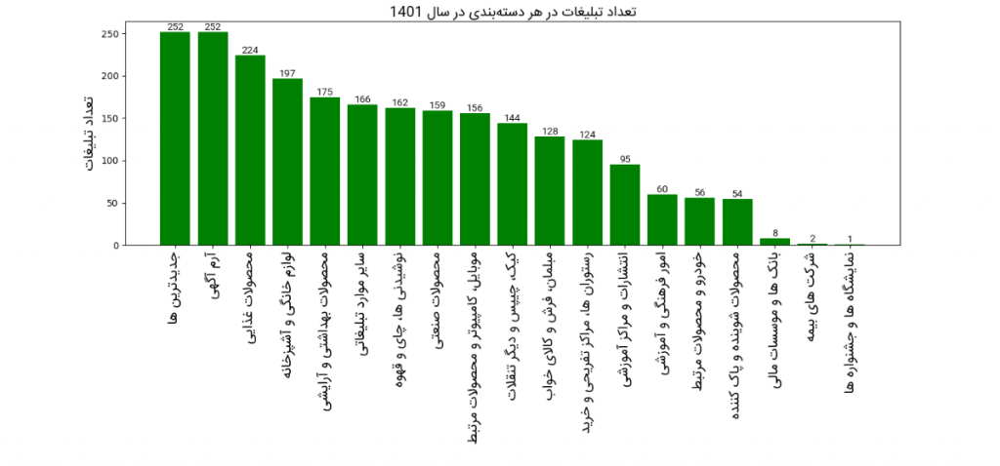
nb.neighbours()
| title | date | |
|---|---|---|
| prev | تگهای EXIF و بحران حریم خصوصی! | ۱۴۰۱/۰۶ |
| next | ۱. هاتداگ؛ هست یا نیست؟ | ۱۴۰۱/۱۰ |